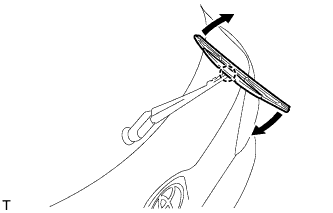
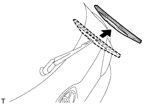
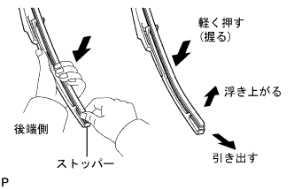
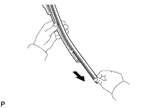

Rear Wiper Rubber Removal |
| 1. Remove Rear Wiper Blade |
 |
Raise the rear wiper blade to the position shown in the illustration until it clicks and the claw disengages.
 |
Remove the rear wiper blade from the rear wiper arm assembly as shown in the illustration.
| 2. Remove Rear Wiper Rubber |
 |
As shown in the illustration, let the rear wiper rubber protrude past the stopper on the rear end side of the rear wiper blade, and pull it out.
 |
Remove the rear wiper rubber together with the rear wiper rubber backing plate.
Remove the rear wiper rubber from the rear wiper rubber backing plate.